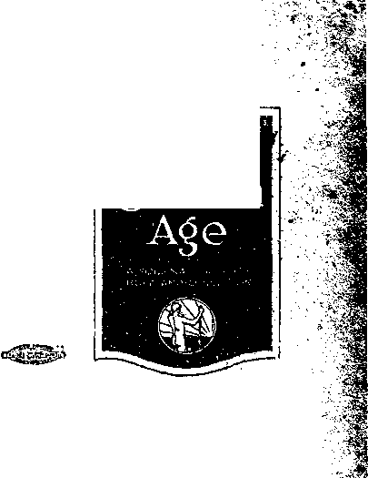

X"
259 South
Phone 2554-M
seond Street
San Jose, California
Temporary change in si7>e and appearance of The Golden Age 1b doe to shortage of print paper in New York City partly brought about by the rail tie-up.
Published every other Wednesday at 35 Myrtle Avenue, ‘ (Boip of Brooklyn) New York, N. Y., by Woodworth, Hudgings and Martin. Clayton J. Woodworth, Editor; Robert J. Martin, Business Manager; XV, F. Hudgings. Secretary and Treasurer. Copartners and proprietors. Address: 35 Myrtle Avenue, (Bora of Brooklyn) New York, N. Y.
Ten Cents a Copy—$1.50 a year. In Canada and foreign countries, $2.00. Remit to The Golden Age.
Entered as second-class "matter at Brooklyn, N. Y., under the Act of March 3, 1879.
Volume I
New York, Wednesday, June 23, 1920
0
Number 20
By n. E. Coffey
• Jne
Golden
COTTON is the money crop of the SouA, a most essential contribution to civilization.
Its fleecy staple clothes the teeming millions, and the by-products from the seed are an important source of food for man ai/tl bed's!,. Hence the welfare of this plant engages our attention and causes us all concern directly or
indirectly.
The Mexican boll-weevil was the first serious pest to attack the cotton-plant. In 1893 it made its appearance in a, far-off corner of the “Sunny South” (Texas), migrated into the United States' •via the Mexican border, and
>thus getting its name. In L. 1907 it had crossed Louisiana into the United States
>%, from Texas and had invaded k- Mississippi. It has now advanced over the principal cotton-growing sections of G the South and causes an estimated annua! loss of $40,-OQO,OOQ, while another $20,-
■_ ' 000,000 loss is accredited to £ “, insects of less destructive f", tendencies.
TABLE of CONTENTS
Another Boll-Worm Coming_____t
Is It a Fair Wage?594
Are Workers Abandoning Seattle?
The Mulatto Question.......... ...... . , .597
Education in Palestine 597
Insurance Business Profitable.-------kps
Improvements In Ships KflS
Efficiency in Dietetics..600 , Justice and the Poor.........
Morning Cometh—A Night Also 603
Life and the Life-Giver 603
Comments on the Foregoing .............604
Life and the Life-Giver. _____________—
K Another and yet deadlier insect now threatens f King Cotton in his adopted habitat, the Southern |’ States, where seven-tenths of the world’s supply £ is produced. The pink boll-worm has crossed
over from Mexico and made its appearance in Texas. This boll-worm is cotton’s most destructive insect enemy. It frequently reduces the yield of lint fifty percent and greatly diminishes the amount of oil produced by the seed. Once it gains a foothold, it spreads like wildfire and is impossible to control. This insect has reduced the yield on what was formerly some of Mexico’s best cotton land to a point where cotton-growing, has had to be abandoned as unprofitable. It is conservatively estimated that were this pest tp gain a foothold.it would cause the cotton farmer
an annual loss of $50,000,000, a total almost as great as the loss from all other insect enemies combined. ’ -
Therefore, speedy steps were taken to eradicate the .• noxious worm. An embargo was placed on cotton-seed shipments from Mexico; and as a first step toward eradi- 4 eating the pest 10,000 acres of land were completely razed, i. e., cleared of all stalks, bolls, leaves, etc. ‘ Hunting for a needle in a haystack would hardly be. less tiresome than this huge . task undertaken by the Department of Agriculture at a large outlay of time and money. It is claimed that -the undertaking was a success; but all danger is evidently not passed, since Louisiana has recently passed an embargo on cotton, seed, etc., coming from Texas. Close watch and vigilance will be necessary in order to keep the pink bollworm from making further inroads.
At present man is struggling against great odds, but the Bible promises that it will not be always thus. Before the Scripture, “They shall not hurt nor destroy in my holy mountain [kin®
do mJ” (Isaiah 11:9), becomes an actuality, injurious insects and parasites must go. God with His boundless resources will devise a way for their elimination, and a natural way. There are scientists who claim that the earth is enveloped in an electrical ring, and that its descent upon the earth shortly will bring about the destruction of injurious insects, parasites, etc. This may be the method the Lord will use; and if so, these wise men have reasoned correctly. Meantime, let us look forward expectantly in anticipation of the Golden Age when the promised blessings will be ours; for not one of God’s promises can fail.—Matthew 5:18.
Distress in Alberta By ciaua Mitchum,
MR. Editor: In one of your recent issues you spoke of a “creeping famine”. It looks to me as if we are face to face with something of - that kind in this western country. Our winter started October 20, 1919, which is unusually early for us. A deep snow, came, followed by severe cold weather with no let-up. We usually have four to six weeks of Indian summer in November and December, but had none in 1919.
The result of this unusually severe weather was that the animals and birds on our farms had not time to grow their winter coats, and I lost most of my fowl right at the start. The stock also suffered. The feed was out in the field; and as the weather did not break up, the getting of this food to the animals was slow, hard work.
This weather also deprived us of means for getting our threshing done. Neighbors could not assist one another as usual. This left us with almost nothing to feed to our stock, and we have had to sell off everything that the butcher would take, to save feed. Old hay and straw brought a big price, and now there is none to be had at any ' price in the section in which I live.
Spring is now here, but our horses are thin and weak from insufficient food. Some of them are too weak to stand, and some of them have died. The brood mares are too weak to keep colts and work, so we are one-third short on horses and are unable to feed those we do have until we can get our crops in.
The spring is late and wet. There are very few places where a tractor will go through muddy fields; and even if we could use tractors we cannot get them, for credit is very hard to obtain after such a season as we have passed through. When we were forced to sell off our
stock last fall the butchers gave us almost nothing for good stock—$3 to $15 a head for calves up to two years old—so that we have no funds with which to buy tractors outright. ’
With a -wet spring the seed will not root low J and the hot summers burn up the young plants before they mature, while wet summers result J in lots of straw and chaff, but wheat kernels will not form. Present indications, therefore, are for a very poor crop in 1920; and this has happened frequently in recent years throughout . all Western Canada.
Under these conditions, with grain at its present market price, and hay for the farmer costing $60 to $100 a ton and straw costing $30 to $50 a ton, what has become of our life work, what will keep life together, where shall we • get bread for our babies, and what will the world • > do that is looking to us for food? I suppose you , will say that your Golden Age will solve these j problems, and it looks as though it is the only thing that would do so. Well! Let it come.
I am ready!
ACCORDING to an ancient system of eco- t -nomics the basic or lowest wage a man could work for would be one that would barely A keep him and a family alive. This was termed the subsistence wage. Any higher wage was so 4. much gain for the -worker; for he was thus much ’,1 farther from the starvation line. The subsist- % ence wage is small. It takes but little to keep « people alive in some countries. For example, the subsistence -wage in China and in India' would be measured with a few cents.
But Americans do not want any one in their country to live on the native Chinese or Indian basis. The subsistence wage is not the American ■wage; and the minimum American standard of living, according to the National Industrial Conference of Lawrence, Massachusetts, calls for $1,385.79 a year. The country, however, is not desirous of having its people live on a minimum , standard; and a slightly more liberal American standard is set at $1,658.04, for a family of five. J?" This may be taken as a normal minimum in vb estimating the wage condition of individuals Js or classes, though some authorities suggest a-, higher figure. t «
When the railway express employes in Middle ' $ West cities were getting $107.50 to $119 a month ;i‘ and asked for a flat increase of $35 a month, was '
it a reasonable demand? On a yearly basis of 300 days the salaries were $1,290 to $1,428, or 22% to 14% under a minimum American wage. The wage asked for was $1,710 to $1,848, or 3% to 11% above the American wage, as figured for a laborer. Is it reasonable to pay a man carrying the responsibility and calling for the intelligence and fidelity of an express position only 3% to 11% more than a day laborer?
Considerable ado was made over the 10% increase given by the United States Steel Corporation to its employes, shortly after the steel strike had failed. Much was made of the fact that since 1915 the laborers had been advanced 144%. The day laborers had been getting $4.62 and went to $5.08 for a 10-hour day, including two hours overtime. This makes the new wage $1,524 a year, if a man works 300 days a year, which few do. On the $1,658 American labor basis the Steel laborers are still 8% under the wage that such a worker ought to get in America. The fairness of the former wage of $2 a day, or $600 a year, may be estimated by making use of the Bradstreet price index for 1915, which was 10.65, and that for February, 1920, which was 20.87. This, when divided into the total wage, gives the number of articles of the same kind purchasable with the money at the time. The $600 wage divided by the 10.65 price index gives 563; and the $1,658 wage divided by the 20.87 price index gives 794. In other words, a fair American wage for a laborer would buy 794 articles, and to enjoy that standard of living the 1915 laborer should have been able to buy that number of articles with his wage. But his 1915 wage would buy him only 563 articles. Therefore, he was obliged to live on a standard of living |gths of a fair living Or expressed as a percent, 71% of a fair living, or 29% below what he ought to have been living at. The $2 wage wTas unfair to the laborer and his family by about 30%. To come up to a fair living, the $2 wage should have been increased from 1915, not 144%, but 176% ; and until it is, the Steel worker must keep living on standards below what Americans ought to have the chance to live on.
The Goodyear Tire and Rubber Company announced that it would make the minimum wage for male employes $6 a day or, on full time, $1,800 a year. This is about 9% higher than the American standard foregoing; and the question whether it is a fair wage for a laborer, hangs on the question whether a day laborer in the rubber industry, with its peculiar requirements and temptations, ought to get at least 9% more than the average.
In New York City the 18,000 elevator operators recently asked for a raise from $6.50 for an eight-hour day, to $8.00, or from $1,950 to $2,400 a year, if the work called for 300 days a year. The fairness of the $2,400 wage depends on when the $1,950 wage was established, on the principle that it is right for the wage to purchase at least the same amount of goods from year to year, and wrong to penalize a worker merely because prices go up. The comparison may be
made by using the Bradstreet price index, which was respectively by years, 1915, 9.85; 1916, 11.83; 1917, 15.66; 1918, 18.72; 1919, 18.66; • “
and February 1920,20.87. The quotient obtained by dividing this average price into the wage for the year, gives the number of articles of the same kind purchasable with the wage, and makes \ possible a comparison of the real value of the \ wage. Some discrepancy might come from the fact that this price index is the average price -of 96 articles at wholesale, while the man on the r street buys only the things that he and his k family use. But the resulting figures are not ;
materially different. For the wage of each of •
the years to equal the $2,400 asked for now, , it should have been respectivelv, 1919, $2,145; r\ 1918, $2,152; 1917, $1,800; 1916, $1,358; 1915,.
$1,132. To put the matter where it can be figured readily, for every dollar of wage received in 1915, the worker, without receiving any raise in the purchasing power of his wages, . ought to receive the following amount each year, T 1916, $1.20; 1917, $1.59; 1918, $1.90; 1919, $1.90; -
February, 1920, $2.12. With these figures any one can calculate what his real wage position is i ? compared with 1915 or the following years, and see whether with all the increase received he !
has been going ahead or astern in the purchasing power of his wages, measured in terms of , ‘ the Bradstreet price index.
Among the most poorly paid workers are . yj those in the textile industry. In Massachusetts the average weekly wage of 9,598, or 17% of the men workers, was under $15; that of 28,621, or 51%, was under $20; that of 43,356, or 87%, was under $25. It is seldom that textile workers can get 300 days work a year; but even if they did, the annual wage -would have been $780, $1,040 and $1,300, or 47%, 63% and 78% of a
u
r
fair American living, as figured for a laborer with a family of four. The effect is that several members of a family have to work in order to earn the living for the family.
It is not likely that the existing situation can be helped very much under present conditions. To raise the real w’age of all the men of the country to the $1,658 American basis is impossible; for though the money wage might be increased, there are not the goods produced to give all the people the kind and quantity of things they ought to have to meet this standard. A variety of factors has combined to reduce the volume of goods produced, the producing power of workers being stated to have declined about 40% from what it was before the war. There does not seem to be the incentive to rouse the people to the pitch of efficient work requisite for all to enjoy a really American standard of living.
Such an incentive, however, is destined to appear ere Jong. The Golden Age is at the doors; and when men everywhere have the feeling that they are to one another as brothers, as they will when the present period of unrest is passed, everyone will be a worker, and will work for the happiness to be found in fruitful, artistic work, and for very love of all the human members of the universal brotherhood that will then exist in that good time coming.
Sharing Ford's Prosperity
IF the earnings of the Ford Motor Company (where the minimum wTages are $6 per day, and not $8 as previously stated in The Golden-Age) permit, the holders of employes’ 6% certificates will be credited a higher return than the 6% guarantee. Only employes are permitted to secure or hold these certificates, and the arrangement is designed to enable the workers in Ford plants to share in Ford prosperity.
Up to one-third of his pay an employe may devote his earnings to an investment in these highly desirable securities. The money cannot be paid from bank deposits or other funds, but must be authorized from current earnings within five days after pay-day. As not every worker can take in a single month one of the $100, $500 or $1,000 units, he is credited interest at 3% on amounts subscribed until the proper amount is reached.
On 30 days’ notice an employe may demand the money for ?his certificates; but the 30-day provision is for emergency use, as the certifi-
--
cates are paid off on demand, with interest at 6%. At death the certificates become payable to the employe’s personal representative, though^ the directors of the Company may hold the investment for them as an income-producing fund, this being evidently for the protection of' survivors liable to be imposed on. If the Ford concern should decide to issue a more favorable form of certificate, it may exchange them for the less desirable ones held by employes, and it may pay them off in cash at any time. *
This is a good addition to the Ford 1914 "j-profit-sharing plan and the cash-bonus plan of < 1920, and is an indication of the steps being taken by many right-minded employers to do the right thing by those that work for them. The Ford industries are notable among Amer- ’ ican concerns, not merely for their size and ' their success, but for the Golden-Age attitude of the management.
Are Workers Abandoning Seattle?
SEATTLE, it is reported, is not enjoying the business boom of the remainder of the country. Perhaps the city was overdone in the extraordinary rise it had for several decades. Just now another cause seems to be operating^
The following items show the temporary de-, cline of the city. Houses are beginning to stand vacant in the workers’ section. Increasing numbers of small mortgages are sought by small house owners apparently unable to continue their payments. In one industrial district there is a decrease of 40% in the number of men using 3 the street-cars. The street railway concern is said to show a growing deficit in receipts from rides by working people. Many thousands of-'4! dollars are being withdrawn from banks that carry deposits of workers. Many journeymen 5* tailors are reported to be about to leave the city.
The movement of -workingmen eastward is-® said to be helped by the Seattle trades unions.'^ One union reports 200 vacancies in the East,:|| which are to be filled by Seattle workers. The'•! Seattle carpenters’ union has sent letters to every city to be posted in union halls to the^| effect that they do not regard that city a goodj^s place for union men to come to. The metal trades unions are assisting the exit of workers,^
This astonishing condition in a hitherto ex-y|| tremely prosperous and attractive city is ro-tlS garded as owing to the attitude of .employers*^ toward union men. Since the great ■ strike
- year or so ago, every effort has been made in the •name of Americanism to break down the labor ■unions. Union men have been discharged and locked out, until they have begun to retaliate with a systematic campaign for the removal of labor from the Pacific coast to more hospitable .sections of the country.
It is a long cry from the discord of Seattle to . the conditions that are promised in the Golden Age; but there is absolutely no doubt that the time is at hand when the better day will dawn and workers and employers will labor together, •not merely in peace, but in brotherliness.
Negro Facts Appreciated By Arthur U. Jennings,
(Chairman, Sons of Confederate Veterans) MR. Editor: I wish to congratulate you upon the fairness and justice which distinguishes your article entitled “American Negro”, in this May 26th number of The Golden Age, which I have just seen.
It is astonishing to see, in a journal pubhshed in the North, an article which shows in every line a determined effort to be fair and to present the truth, without prejudice toward one section or hypocritical pretensions toward another.
. Your remarks regarding the beginning of slavery are true, but they could have gone much farther; for it is a fact that the North (New England and New York) had a practical monopoly on the slave trade. Hundreds of ships plying from Boston, Newport, Providence and New York made the Congo regularly, trading rum for negroes, whom they brought here and sold to South American countries and the Southern states. Faneuil Hall of Boston, the famed “Temple of Liberty”, was built with slave money, it is said; for Peter Faneuil was a slave dealer and made his fortune that way. Much of the prominence of the slave-trading cities mentioned above came from their slavetrading prosperity. Girard College was founded with money that Girard made on his slaves, whom he worked on a Louisiana plantation. The first slave ship was the "Desire”, which sailed from Marblehead, Mass.; and the last one, the “Nightingale”, captured by a U. S. man-of-war off the African coast with 900 slaves aboard after the war between the States had started, was a New England ship. It was a
U pre-war taunt that “the North sold slaves, the South only bought them”; and it is a historic the reasons why there were no resident slaves in the North were purely economic, not in any way whatever humanitarian.
In no one way is the history of our country more distorted (and it is a fabric of distortions) than on the subject of slavery—its institution, its progress, and its abolishment. And the section most responsible for it all points the finger of reproach at the section least responsible, while jingling in their pockets the money they obtained for the slaves they sold them.
A Baptist pastor in Toledo said to a ministerial conference: “Not until we ministers get religion ourselves can we expect to deal wisely with the Negro problem”; and The Federal Council of Churches of Christ in America has issued a call urging that the Negro be granted economic and community justice. They denounce the treason and anarchy of lynch law, and add; “Communities that have expressed horror over atrocities abroad, have seen, almost unmoved and silent, men beaten, hanged and also burned by the mob”.
IN South Africa there are 600,000 mulattoes, in the West Indies a like number, and in the United States there are close to 3,000,000. The colored population of Porto Rico is more than six-sevenths mulatto. Since 1850 the percentage of mulattoes among the blacks has increased from 11% to 20%. However, this does not mean, as some have hastily concluded, that 3,000,000 children in the United States have white fathers and black mothers. It merely means that there are 3,000,000 who have some white blood in them, and in a few generations it might easily happen that all the colored race would become mulattoes through the intermarriage of blacks and mulattoes without the addition of any white blood whatever.
SIXTY-TWO Hebrew schools with 390 teachers and 8,805 pupils are being operated in Jerusalem by the Board of Education of the Zionist Commission, a report to the Zionist Organization of America states. The schools are conducted entirely in Hebrew.
Practically all education in Palestine is directed by the Zionist Commission, whose activities in establishing schools have extended as
ItJ far as the'establishment of a Jewish school
& solely for Arab children. Included in the schools maintained by the Zionists in Jerusalem are a Hebrew Teachers’ Seminary, two high schools, f' an art school, nine primary schools, twelve kin-dergartens, seven technical schools and twenty-v eight religious schools.
( The technical schools include schools for embroidery and lace work, sewing, copper work, v.' filigree and weaving. Evening classes, including h5 law lectures and advanced courses in Hebrew,
are held in many of the schools.
The Hebrew University, now under construc-tion on the Mount of Olives, will have several of I its buildings completed by the end of this year, L according to a recent announcement of its f designer and builder, Prof. Patrick Geddes of & the University of Edinburgh, a noted town-g’ planner, working on the restoration of Palestine g* under commission from the Zionist Organiza-g? No other nation has been so distinguished as E the Jews for their cultivation of education. Under their hand, schools, colleges and univer-|r sities have sprung up wherever there have been K prosperous Jewish communities. True to their traditions the first move is to equip their Home | Land with what will doubtless become the best I* institutions of the world.
| Insurance Business Profitable
THE annual report of Frank T. Ellsworth, Commissioner of Insurance for Michigan, E; shows that for the year 1919 the people of ’ Michigan paid to stock and mutual life insur-|;;-x anee companies in premiums the sum of $32,-
g. 166,294, while the total death loss in the state
of Michigan during the same period amounted Kv to $9,524,911. The difference between these two amounts is $22,641,383. Obviously the insurance | business is a profitable business. Obviously, too, L.’ the insurance companies are in a position to . give 22,641,383 reasons to the politicians of ’ Michigan why insurance should continue to be a E - . private business, and why the state should not gf conduct it in the efficient, not to say, profitable £5 way in which it is now conducted.
An elderly friend, calling attention to these p". figures, says:
jfc, “The average policy runs seven years. In other words, for every dollar the public pays in1 seven years they secure back thirty cents. They could have put this , money in a bank and divided $32,166,294 immediately.
■SgaL.-.*, (
They could have bought city bonds and had about . ds $34,000,000 to divide in seven years.” . \v||
What is going on in Michigan is going on in every state in the Union.
Improvements in Ships
A COMPELLING emergency, the war, forced to
■ the front some inventions that would have v ’ been long in attaining the importance they so quickly developed. One of these was the electric . welding process. This process was used in the repair of the sabotaged German ships seized in American ports, and has worked so remarkably -J well that it bids fair to revolutionize the ship- ' building of the future. , «
It has been discovered that the tensile strengtlr of welded joints is 90% to 95% of the original plates as against 65% to 70% in riveted joints, and microscopic and metallurgical tests have shown that the two metals are fused together so a perfectly that no line of demarcation between . 1 them can be discerned. The riveted joints are slightly more elastic than the welded joints.
It has been demonstrated that ships specially designed for electric w’elding can be built at a saving of 25% over present methods and in . ’:s| 25% less time. There is also a saving of 10% ■ 3s in material as compared to the riveting process.’ This means that a ship of 9,500 deadweight tons carries 500 tons of useless rivets and over* -Wg lapped plates, and that in lieu of these could carry 500 tons more of cargo. ;
The reenforced concrete vessel was an inter-esting experiment. It is too early yet to pass final judgment upon this form of construction, la but at this time it seems somewhat doubtful. ■’’3| The hope that they could be built more quickly than steel vessels was not justified, and the designs first made required strengthening, but this difficulty was not unlooked for and was ||g easily surmounted. The average time of con- •-^1 structing a concrete hull was seven months, the same as steel. This could probably be reduced considerably. '
The largest concrete vessels thus far built are 420 feet long between perpendiculars, 36 feet /ySM moulded depth and 54 feet beam. They have S|l behaved well in all weathers, showing less vibration than steel ships, with a considerably icJa increased period in the roll. A few shear cracks have been observed in all the shells and buUfr heads of the three cargo vessels and twenty barges first placed in use. Concrete ships
easily damaged in docking. Any severe concentrated blow shatters the concrete; but repairs are simple, cost little and can be effected with a minimum loss of time. One of the concrete ships ran onto a reef on the Maine coast, and ripped both sides open the whole length of the vessel. But the frames were uninjured, and it is hoped that the vessel can be raised and put into use.
Concrete ships have a greater carrying capacity for bulky cargoes, such as cotton or fruit, and a smaller capacity than steel for heavy cargoes such as steel, coal or oil, in which the r. deadweight capacity is reached before the hold spaces are filled.
Many of the new American ships are fitted to use oil as fuel. There is 10% more cargo space in a motor ship than in one fitted to operate with triple-expansion steam engines. Such vessels require smaller crews, the steaming radius is three or four times as great as that of a coal-using vessel, the fuel can be carried more conveniently and is not more than 50% as great. -These vessels are slower, are more liable to break down and are more difficult to repair, but are better, all things considered, for long voyages.
The Shipping Board program calls for oiltank facilities at St. Thomas (in the West Indies), Virgin Islands (also in the West Indies), Honolulu (in the Hawaiian Islands), Manila (in the Philippine Islands), Punta Del-gada (in Portugal), the Azores (two-thirds the way across the Atlantic on the way to Portugal), Bizerta (in Tunis) and at Constantinople.
An advantage in the use of oil as fuel is the possibility of omitting bulkhead doors in the construction of the vessel. These doors are extremely hard to shut; and it has been generally found in case of accidents that they are not - closed. Consequently bulkheads have failed of . their mission, and the ship has gone down.
In ship fittings, a safe has been invented p which automatically releases itself from a sink-. ing ship, sends up a rocket every hour for the first twelve hours, emits a loud sound signal !■* and gives forth a light continuously for three months. The safe is unsinkable.
if'' ’In ship operation the Sperry gyroscope com-.- pass has shown the possibility of non-rolling ocean liners, and its use has lowered the speed record between Jacksonville and New York by two hours. With the aid of this compass the ator knows the true North at all times.
A revolution in ship design has been proposed by an inventor who would make his ships in two detachable parts. The cargo part is a scow with a huge notch in its rear end. The power part, carrying engines, boilers, propellers and crew space, is constructed to fit into the notch in the cargo part, and to be fastened securely to it. The purpose is to save the time of the power part while the cargo part is dispatching , and receiving cargo.
’■‘B
-5.
A/
MARINE legislation will have to be overhauled. To this day, although wooden vessels are virtually obsolete, the navigation laws of the United States provide that before any American-built ship can be admitted to American registry a certificate must be produced under the hand of the principal or master “carpenter” by whom the vessel has been built.
The United States is the only great government giving no individual or body the authority to investigate maritime casualities. Some years ago, when a fuel tank exploded on a steamer .in one of our large ports, a city coroner was the only official having authority on the premises.
A law is needed which will arrange a standard for determining the number of passengers that may be carried on a steamer. As this matter is now fixed it would be possible for a captain to sail from one port with the number of passengers permitted by the port of departure; and on arrival at the port of call the number on the vessel would be illegal, or vice versa.
THE Shipping Board is getting a passenger service under way and expects in a few months to have a steamer sailing every other week to eastern South America. Three of their five boats are now about going into commission. In addition, forty large ships, each 535 feet long, and with accomodations for 700 passengers, are approaching completion and are also to be used in passenger service.
BEAT -until very light an egg seasoned to taste with sugar, salt, and cocoa; add a large cup of hot milk. Good at any time. ;
• a
■
Efficiency in Dietetics By Mrs. Andrew J. Holmes I /COMBINATIONS of food are often spoiled k because of false economy in substituting \ ingredients of a combination which renders the - food value almost nih For instance, when cream is required, and milk is used instead, the food is deficient in fat, as a result.
?. We are living in an age when efficiency counts. And efficiency in selecting and combining foods s: for building health and strength is just as im-
*■ portant for the housewife as efficiency in any
Other occupation. In all lines of endeavor we try to get the most work with the least waste of | energy. So if you aspire to be a person of
^7 ; efficiency, look to it that you do not put into f your stomach indigestible food; for sooner or
< later you will pay the penalty in weakness, sick-
• ness and a general break-down of your health,
s Dietetics has come to be a science. The old h dietetics, based on guess-work and experimentation, has had its day, and gone the way all f ignorance must eventually go. When dietetics \ . is taught in the school, that to retain our effici-. ency we must eat to live and not live to eat, only then will the average length of life be ( extended from thirty-five to one hundred and J fifty years or longer.
The dishes which appear on the tables of the average homes of our so-called better-class are ' far, far better adapted to the promotion of disease than the promotion of health. We are L divided into two classes today—those who are , sick and those who are going to be sick.
L Justice and The Poor Bv
THE Second Defect: Court Costs and Fees. I’ (Part 1.)—“Believing that courts as gov-I? emmental agencies are operated as a part of
our social system for the benefit of all, we are unwilling to subscribe to the view that the litigant should pay all the expenses of maintaining ! the court. Inasmuch as the law of the state requires that fees and costs be taxed and charged | to the litigants, and has conferred no power
B upon this court to abolish them entirely, we
. could not consider doing away with all fees how-fh ever desirable that might seem.”—Committee on Costs of the Cleveland Municipal Court
k The entire question of the costs and fees paid fe- to courts and court officers is one that has been neglected in discussions concerning the better-IgC xnent of the administration of justice. While the
total expense of litigation and the injustice 'jja which it causes is a common topic, the precise ’ ; part played by the system of imposts fixed and , levied by the state on persons who are compelled . 7 to resort to the courts for protection or redress has never received any general or extended con- ; sideration. The American Bar Association’s ' “Special Committee to Suggest Remedies and Formulate Proposed Laws to Prevent Delay and Unnecessary Cost in Litigation”, which has J been in existence since 1907 and has submitted C annual reports, has laid almost all of its emphasis on procedure and has done but little with J the subject of costs. ■
This is but natural; for the present system y and tariff of fees is so curious that, with the j exception of the taxing clerk and those attorneys who live by costs, few lawyers understand its details or why many of the items exist. And yet, inasmuch as these costs form no inconsiderable item and are a prolific source of denial £ of justice to the poor, they require careful statement and examination.
Nature and History of Costs and Fees.
Costs have existed so long that there is a gen-
eral disposition to regard them as fundamental, ** as immutably bound up with our legal institu-
tions. This is a mistake. Costs are not estab- J fished by our constitutions; they are not the
product of common law; they exist solely and -entirely as creatures of statute.
The early English law had no system of costs. $ An unsuccessful plaintiff or defendant might be 1 amerced “pro clamore falsa" (for false accusa-sion); that is, the court might impose a fine for g
setting up a false claim or defense; but it is >
doubtful if this was done to any extent. So far as costs played any part, they were included in .£3 the damages or, on occasion, assessed in the Ja arbitrary discretion of the judge. It is true that -flg it was the royal prerogative of the earlier kings to charge suitors for writs in the king’s court, but it was an accepted maxim that the poor ,/J
should have their writs for nothing. “Before a
the Statute of Gloucester no person was entitled -3 to recover any costs of suit either in plea, real, ',3 personal or mixed.”
With this statute of Edward I the system of .-Ji fixed costs begins. The motivating causes which led to the establishment of court fees are not' clear. They seem to have been a survival of the; idea of revenue, a carrying over of the concep-
tion of fines for a false claim (for in theory only the wrongdoer bears costs), and a desire to impose a deterrent to litigation. At the same time there was a clear idea that, while revenue and a deterrent were desirable, costs ought never to operate as prohibition; and by the time of Henry VIII ample provision had been made to safeguard the rights of the poor.
The Statute of 11 Henry VTI, cap 12, permitting poor persons to sue without payment of costs merits quotation; for the centuries which have intervened between its enactment in 1495 and the establishment of the small claims court in Cleveland in 1913 bear witness to no more comprehensive attempt to secure freedom of justice to the poor. The tendency has, in fact, until recently been entirely in an opposite direction. It was provided:
“That every poor person or persons which have or hereafter shall have causes of action against any person within this realm shall have by the discretion of the Chancellor of this realm, for the time being, writ or writs original, and subpoenas according to the nature of the causes, therefore nothing paying to your Highness for the seals of the same, nor to any person for the writing of the said writs to be hereafter sued; and that the said Chancellor shall assign clerks to write the same writs ready to be sealed; and also learned counsel and attorneys for the same, without any reward taken therefor ; and if the said writ or writs be returned before the king in his bench, the justices shall assign to the same poor person or persons, counsel learned by their discretions, which Hha.ll give their counsels, nothing taking for the same; and the justices shall likewise appoint attorney for such poor person or persons and all other officers requisite and necessary to be had for the speed of the said suits, which shall do their duties without any reward for their counsels, help and business in the same; and the same law shall be observed of all such suits to be made before the King’s justices of his common pleas and barons of his exchequer, end all other justices in the courts of record where any such suit shall be.”
This was the origin of the "in forma pauperis" proceeding. It is an important landmark which has been too much forgotten. Because it gives effect to the spirit of Magna Charta it has been regarded as establishing a constitutional principle. This enactment was carried to its logical completion by 23 Henry VIH, cap 15, which freed a pauper plaintiff from imposition of costs if he failed to obtain a verdict or was nonsuited. The statute left the defeated poor suitor to be subjected to such other punishment the judges deemed reasonable. The old books
state that if a pauper abused the proceeding or was nonsuited, he might be taken to the marketplace and whipped; but the general spirit of the law was such that when a motion came . before Lord Chief Justice Holt to order a nonsuited pauper to be whipped, he denied the motion, observing that there was no officer for : the purpose and that he had never known it ■ to be done. ■
These statutes remained in force in England until 1883, when by the Statute Law and Civil Procedure Act they were repealed, and with them these rights and privileges swept away. English law remained inhospitable to poor suitors until the great changes inaugurated in 1913.
The American states carried over into their judicial system the plan of costs and fees, but \ many neglected to include the necessary corollary of the proceeding in forma pauperis. In Pennsylvania it has been held that the statute of -11 Henry VII, cap 12, is part of the common -j law of the state; but in practice the statute is ignored. Today, the permission to sue without costs is granted in about half the states. Even in such states the right is a good deal hedged about, by limiting it to certain specified types * * of cases, as wage claims, by confining it to pro- ; ceedings in certain courts, and by holding it , inapplicable to cases on appeal. In several states it has fallen into disuse. ■
The Present Situation. It is extremely , difficult to present with any conciseness the existing costs and fees in the United States. The items are innumerable. They vary from , state to state; and within a state they differ in different courts, in different proceedings, and a line of cleavage runs through law and equity. In the Boston Municipal Court service of process must be made by a sheriff or constable whose fees are paid by the plaintiff; in the Cincinnati court the constable must serve process, but he is paid a salary by the city; in Cleveland the mail is used; in New York any disinterested person may serve the summons. In some states fees are charged for marking . cases on the calendar, for entering judgment, : . for issuance of execution; in others such costs ; are unknown. If a cook, suing for wages earned _ on land in Boston, takes an appeal from Munic- J ; ipal Court to the Supreme Judicial Court, the -V entry fee is three dollars; but if a cook, suing for wages earned on a vessel which comes into <J
the port of Boston, takes an appeal from the District Court to the Circuit Court of Appeals, the entry fee is $35. In Oregon, to the regular filing fee in the county court there has been . added a one-dollar fee for the benefit of the Multnomah County law library. In many states jury fees varying greatly in amounts are charged;—California $24 a day, Connecticut one payment of $6, Minnesota $3, Pennsylvania $4, Virginia $1.50, Oregon $6 (jury of six); in Ohio a law prescribing a jury fee of $5 was declared > Unconstitutional. In California, until changed in 1915 at the instance of the Public Defender, the costs of entering and marking a case on appeal was borne by the plaintiff, although the judgment in the lower court was in his favor and he had not taken the appeal. In some jurisdictions the defendant must pay a fee before he can appear and file an answer. In Illinois the respondent in a divorce case has been obliged to pay three dollars for the privilege of contesting; while in Missouri the court was doing it utmost to prevent divorces by default, thereby to safeguard the interests of the state.
It is impossible to find any principle by which costs are determined and regulated. They are too low to deter the rich, but high enough to prohibit the poor. They bear little relation to the actual disbursements of the parties. “Term ' fees” which taxed in favor of the successful party represent no cash expenditure by anybody. The bill of costs includes one dollar for a writ that can be purchased at any law stationer’s for five cents. It allows to the prevailing party two or three dollars as an attorney’s fee, while the actual Charge made by the attorney to his client is probably ten times that amount.
The fees paid by the litigants bear no closer relation to the state’s expense in maintaining the judicial organization. The average cost to the state for a trial with jury is variously estimated to be from $50 to $150. The total fees paid by litigants for such a trial range -from $3 to $32.
If the existing system were brought forward
p de novo, it would be ridiculed as absurd. Coni' sidering it as a part of our traditional method of working out justice, it is fairer to call it an 7 anachronism. The Cleveland report accurately Summarizes the situation:
‘t,, “The old standards worked serious inequalities and r-.JSfequently discriminated against the smaller cases.
Charges are made in smaller cases for services which
are not charged^ in the larger. For example, in the justice code fees are charged for services of the judge in trying the case and in entering judgment, while for similar services rendered by judges of common pleas no charge is made. There are also instances of greater charge for purely clerical or ministerial work; for example, taking affidavits, bonds, undertakings, issuing process, orders of attachment, poundage, etc. The committee was of opinion that like services should be charged for equally.
“In making the revision we have endeavored to adapt the charges to modern conditions. The present schedule is a relic of the stage-coach days, and in many respects has come down to us unchanged from the laws of the Northwestern Territory and from the first enactments of Ohio after achieving statehood, passed in February, 1805. These schedules of fees were enacted under dif- 1 ferent conditions when communication was difficult, facilities of transportation were scarce and labor-saving devices unknown. .
“An inspection of the old schedule under modem conditions shows also disproportionate charges and absurdities; for instance, the charge of twenty-five cents for copies which are now’ made by using carbon paper and not by long hand, as was necessary before the day of the typewriter. So is the method of charging mileage or travelling expenses inexcusable. For these reasons your committee deemed revision of many fees necessary.”
By eliminating all fictitious costs and leaving the worry over that puzzle to the taxing clerk, and narrowing the inquiry to the actual cash expense for costs which must be met by persons desiring to use the courts, it is possible to make a more concrete presentation. Because of radical differences, it is convenient to separate costs into three groups: First, costs in the trial court paid to the court or its officers; second, costs on appeal; third, costs for witnesses, transcripts of evidence, and briefs. As to the first, there being several trial courts, each with its own costs, it is advisable to study only the inferior courts where the cases of the poor are generally heard, except where the inferior court’s limit of jurisdiction is so low that cases are necessarily brought in the superior courts. . .
[All statements are taken from such authorities as the Am^r- , Scan Bar Association Review, American Judicature Society Review Bulletin, Chief Justice Olson in the Annual Reports of the Chicago Municipal Courts, various law books, and other works. This is one of a series of articles reprinted from a work of limited circulation published by the Carne'gie Foundation for the Advancement of Teaching and entitled “Justice and the Poor”. The articles are: (1) Freedom and Equality of Justice: The Ideal; (2) Denial of Justice: The ’ Fact; (3) Defects in the Administration of Justice; (4) The First Defect: Delay: (5) The Second Defect: Court Costs and Fees; (6) The Third Defect: Expense of Counsel.
Letters are welcome from readers giving an nccount of ■ their experiences with the administration of justice.] ;
"Watchman, what of the night?. . . The morning cometh, and a night also."—Isaiah 21:11, 12.
-:S-
T HE literature of the world shows that intelligent men have refused to believe that the divine purpose in the creation of our earth has yet been attained. Continually we find references to "the morning of the new day,” to the "golden age,” etc., etc. Yet not to the longings of men’s hearts, but to the promises of our God, do we look for real instruction on this subject. The Bible most emphatically declares that the entire period of human history thus far has been a night time.
The Prophet David explains, “Weeping may endure for a night, but joy cometh in the morning”. (Psalm 30:5) Thus prophetically we are assured that there will be a morning whose glory, brightness and blessings will fully compensate for all the dark shadows of the night time past. Our text is another prophecy along the same line. The message of the Lord is: "The morning cometh!” ■ St. Paul writes that up to his time the world had been under a reign of sin and death, not under a reign of righteousness and life. (Romans 5:21) He points out also that the day of the Lord will come, and will come gradually, stealthily taking the world unawares, “as a thief in the night”.— 1 Thessalonians 5:1-6.
All of the apostles assure us that it is not God’s purpose to permit the reign of sin and death to continue forever. They tell us that the divine program is that Messiah, in the Father’s appointed time, will take to himself His great power and reign King of kings and Lord of lords—putting down sin and every evil thing, uplifting humanity and granting a divine blessing where for six thousand years there has bben a divine curse. The Bible writers explain that this does not signify a change in the divine purpose, but that God had planned this thing in Himself from before the foundation of the world; and that although He had permitted sin to enter and death to reign, He had made fullest provision for the Redeemer to die for our sins and eventually to become the Restorer and Lifegiver to Adam and his race—to as many as will accept everlasting life on the divine terms.
The apostles tell us that during the “night time”, since Jesus’ death, God has been doing a Special work—selecting from mankind a special
class, a saintly few—"the church of the firstborns, whose names are written in heaven”. These are not taken from any one nation or denomination. This "little flock”, to whom it is the Father’s good pleasure to give the kingdom (Luke 12:32), is composed of all the saintly . followers of Jesus, who walk in His steps in the narrow way during this gospel age. Their experiences are to quahfy them for association with their Redeemer in His Messianic kingdom. Their trials, their obedience, and their sufferings for righteousness’ sake are to work out for these a far more exceeding and eternal weight of glory. Suffering with the Master for the truth’s salte in the present life, they are to share His glory, honor and immortality in the life to come. They are to be His joint-heirs in His kingdom.—Galatians 3:29; 2 Timothy 2:11,12.
The Kingdom Sunrise Nearing.
Amongst the Lord’s people even, few, yet understand that Jesus distinctly teaches that the “Sun of Righteousness”, which will arise with healing in His beams and whose light will con* stitute the new day, will be composed of the church of Christ glorified—changed from human to divine nature by participation in the first resurrection. Our Lord Jesus tells this in the parable of the Wheat and the Tares. He declares that in the end of this gospel age all of the wheat class will be gathered into the heavenly garner, and that “then shall the righteous shine forth as the SUN in the kingdom of their Father”. (Matthew 13: 43) We must not think, however, that this signifies the church without the Redeemer, but must remember that Jesus is “the head over the church which is His body”.—Ephesians 1: 22, 23. '
How wonderful, how beautiful, how appropriate are the word-pictures of the Bible I No one but the Lord knew of the great divine plan. No one but Him, therefore, could give these pictures of its development. In various terms and figures of speech the Bible attempts to give us a little glimpse of the glorious conditions of that day, The new day and the kingdom will be “the desire of all peoples”. In that day the . righteous will flourish, and evil-doers will be cut, off from life. During that thousand-year day ’
•4
-v.J
•'.5
of Messiah’s kingdom, Satan is to be bound, “that he may deceive the nations no more”. (Revelation 20: 2, 3) Landlordism will come to an end; for “they shall not build and another inhabit; they shall not plant and another eat the fruit thereof”, but “shall long enjoy the work of their hands”.—Isaiah 65: 22.
The earth is to yield her increase. (Psalm 67:6) Streams are to come forth in the desert; the solitary places are to be made glad. The entire earth is to become like the Garden of Eden. It is God’s footstool, and He declares that He will make it glorious. It is not to be burned up. with literal tire, as once we supposed. It is to “abide forever”. (Ecclesiastes 1:4; Psalm 104: 5) "He formed it not in vain; He formed it to be inhabited.”—Isaiah 45:18; 66:1; 60:13; 35:1, 7.
| Wonderful Foregleams of Light.
The most wonderful thing that the Bible tells us respecting that new day is that it will bring great intelligence and enlightenment to every creature. The light of the knowledge of the glory of God shall fill the whole earth as the waters cover the face of the great deep. (Isaiah 11:9; Habakkuk 2:14) “And they shall teach no more every man his neighbor, and every man his brother, saying, Know the Lord; for they shall all know me, from the least of them unto the greatest, saith the Lori” (Jeremiah 31: 34) Ultimately every knee shall bow and every tongue shall confess, to the glory of God.—Phil-ippians 2:11; Isaiah 45: 23.
What an enthusing prospect the Bible holds out before the church and before as many of the world as can exercise a measure of faith to believe! The world indeed sees to some extent that great blessings are coming; but just what these are and how they are to come mankind know not; for “the world by wisdom knows not God”. (1 Corinthians 1:21) The worldly wise have rejected the Bible, and do not trust it as a revelation from God. Thus the wise are caught in their own craftiness. (1 Corinthians 3:19) Their boasted wisdom ensnares them and blinds them to the divine revelation.
Nevertheless, some of our greatest thinkers —Mr. Edison and others—are rapidly seeing that the world is just on the verge of the most wonderful inventions and knowledge, which will transform the face of the earth and the people thereof. They are corroborating the Bible unwittingly; for they believe it not and know .not of its message.
The Dawning Begun in A. D. 1874.
Let us not stop now to discuss the darkness of the night and its weeping. Let us awake, and take note of the fact that the dawning of the new age is already here. For the past forty-two years we have been in it and enjoying some of its blessings. But those blessings came so stealthily—"Like a thief in the night”'—that few recognize their import. Soine few have been calling attention to the fact that we have been in the Millennial dawn ever since 1874.
Bible chronology quite clearly teaches that the six thousand years since Adam’s creation have ended—six great days of a thousand years each, mentioned by St. Peter—“a day with the Lord is as a thousand years”. (2 Peter 3:8) Now the great seventh day, also a thousand years long, has commenced. We have been enjoying its dawning. It is to be a grand day! What wonder if the dawning be remarkable!
It may surprise some to be told that the past forty-two years mean more to the world in increase of education, increase of wealth, increase of all manner of labor-saving inventions and conveniences, increase of safe-guards and protections for human life, than did all the six thousand years which preceded them—many times over. The world has probably created a thousand times as much wealth during these forty-two years as during the entire six thousand years preceding. Yet these changes have come so gradually that few have noticed them.
Fulfilment of Prophecy Everyivhere.
Forty-two years ago man labored from sun to sun; today we are rapidly approaching an eight-hour day. Forty-two years ago nearly all . the labor of the world was done with sweat of face; today it is nearly all accomplished by machinery. Forty-two years ago the sewing-machine was just reaching perfection; today it is everywhere indispensable. So with the thousand household conveniences. So with nearly all of our sanitary and plumbing arrangements. So with farming implements. Reapers and binders, mowers, automobiles, gas engines, etc,, etc., all belong to these forty-two years. In our cities the modern conveniences are wonderful. Solomon in all his glory never even dreamed of such things as the poorest human being in America may enjoy!
•- • . ■■ •
•\''';;W
The Golden Age for June 23, 1920 &P5 ■•?■£
..........................................................-............................ ■*«.......................................... .. s:
Prophecies respecting streams in the desert and the wilderness blossoming as the rose are having fulfilment—not miraculously, but in hart mony with the divine order of an increased in? telligence amongst men. Artesian wells are being drilled, irrigating canals constructed, not only in the western part of the United States and Canada, but also in far-off Mesopotamia. The results are marvelous. Land previously not worth fencing is valued at $500 per acre today. The increase of knowledge has been suppl e-mented by governmental arrangements for the distribution of that knowledge amongst the people. The soils of various localities are being analyzed at public expense; and the tillers of the soil are given knowledge as respects what kind of fertilizers will bring satisfactory results.
Under these conditions it does not surprise us to know that as much as 156 bushels of corn have been raised to one acre, and that 600 bushels of potatoes and over are not an uncommon record. Is not the Bible being fulfilled? Who can dispute these facts? What do they signify? We answer that they exactly corroborate the divine declaration which describes our day: Many shall run to and fro; knowledge shall be increased; the wise of God’s people shall understand ; and “there shall be a time of trouble such as never was since there was a nation”. —Daniel 12: 4,10,1; Matthew 24: 21.
Increase of World-Wide Discontent.
We are in the morning of our text. Ah, what a glorious morning! How changed the human conditions from those of our grandfathers! How thankful the whole w’orld should be! Paeans of praise should be rising from all the people of the favored lands of civilization; and helping hands should be outstretched to carry the same blessings to heathen lands. But is it so? Are the people happy and rejoicing? Are they appreciative of the new day?—of the gifts of divine providence?
No! In proportion as the blessings of God ’ have come, the discontent and unbelief of humanity have increased, not only in respect to the Bible as the divine revelation, but in many instances in respect to the very existence of an intelligent Creator. Notwithstanding the great ( increase in the world’s wealth, and the fact that there are some noble souls who are using their £ share of the wealth in a praiseworthy manner, s nevertheless the general operation of the law of
& ' "
selfishness prevails; and all the legislation which has been enacted, or which can be enacted, fails to restrain the giant institutions—corporations—of our day, fails to hinder them from the exploiting of the masses in the interests of the comparatively few. . ,
Did God know all these things? What will \ He do about them? Will He bring in the Millennial blessings, and risk that men shall take for y granted that they have won the secrets of nature , by their own wisdom and perseverance, and forget God entirely? Will they become more discontented? Would a Millennium of discontent be advantageous? What will God do about it?
The Dark Night Already Settling.
According to the Bible, God foreknew of the conditions of our day as we are now reviewing them; and in our text He gives a key to the sit-nation—elsewhere in the Scriptures made very 5 plain. Through the Prophet, God tells of the dark night coming—after the morning dawn had been well ushered in—a dark storm-cloud just at sunrise. This dark hour is described in the prophecy of Daniel, and also in that of our Lord • Jesus, to be “a time of trouble, such as never was since there was a nation”. w
Bible students see this great time of trouble •' already beginning in the letting loose of the, winds of strife in Europe. In the light of the r Bible they perceive that the result of this present war will be the great wakening of the na- ' tions—of the governments of the earth—an increased knowledge and discontent amongst the people everywhere.
The next phase of the trouble, according to the Bible, is to be the “great earthquake, such as was not since men were upon the earth, so mighty an earthquake, and so great”. (Revela- . tion 16:18) This is not a literal earthquake, ’ but a symbolic one—revolution. Then the third phase of the calamity—the darkest of all—will -
be the symbolic fire of anarchy, which will ut- j terly destroy our present civilization. Then, in ■ the midst of that most awful time of trouble, > Messiah, the great King, will take His great power and will exercise it, with the result that '*
the raging waves of the sea of human passion 5
will all be quieted, the fires of anarchy will all -be extinguished, and the reign of righteousness -5 and peace will begin.
Cannot we see the wisdom of the great Crea- $ tor’s program? He has determined to permit
mankind to convince themselves of their own impotency, of their need of a God, and of the fact that there is a God, and that His glorious purposes for humanity are revealed in His Word. Ah, it is no wonder that the Bible speaks of that revelation of the Lord as the “still small voice of God”, speaking to mankind through Messiah’s kingdom! No wonder the Lord declares that “then He will turn to the people a pure message, that they may all call upon the name of the Lord, to serve Him with one consent 1”—Zephaniah 3:8,9.
Messiah Will "Malte All Things New”.
St. Peter gives us a vivid picture of the new order of things in Messiah’s kingdom. He says, “The day of the Lord will come as a thief in the night; in the which the heavens shall pass away with a great noise, and the elements shall melt with fervent heat; the earth also, and the •works that are therein, shall be burned up. . . , the heavens, being on fire, shall be dissolved. . . Nevertheless we, according to His promise, look for new heavens and a new earth, wherein dwelleth righteousness.”—2 Peter 3:10,12,13.
The “new heavens” will be the glorified church, consisting of Jesus the Head and His bride class, selected from the world during the past eighteen centuries. The “new earth” will be the new social order under the control of the new heavens. There will be no patching of present institutions, but a clean sweep of them by the fire of divine wrath preceding the estab-ishment of the new order, wherein only that which is righteous, just, equitable, true, will be recognized in any degree.
We rejoice that such glorious things are coming—even though the world must necessarily reach them through the tribulation of the time of trouble. Happy are those whose eyes and ears of understanding are open now, and who are in such heart relationship with the Lord that He can make known to them in advance something of the riches of His grace, and show them how the coming troubles will work out blessings for the human family.
Life and The Life-Giver By J. w. Coolidge, m. d.
S a matter of pure reason, it must infallibly be that the proper means and agencies for the care and preservation of our bodies have been provided; that is only a wise provision of a kind and beneficent Creator. What are these agencies and are all discoverable by man? All human experience affirms that they are. They exist as naturally and continually acting forces revealed to and under the control.of the intelligence of men. They exist in nature everywhere —most wonderful, so varied, such a great multiplicity and so adaptable—in the air, the water, the food, in fact in all nature—the mineral,, the vegetable and animal kingdoms.
Let us instance the almost countless numbers of medical plants for man’s use growing by the neglected wayside, in field, forest and garden. They are medicines of nature for man and also for animal life. The former finds these properties and applications through human energy and education: the latter by instinct. .
New discoveries are always consequent upon new effort; first the sense of the need, then the finding of what has always been in nature simply awaiting its day—just another step forward and the unknown is revealed.
Society functions at its best and highest when it studies how to promote the physical wellbeing of the individual, not to the neglect of the spiritual, but as the very foundation of principle upon which the higher life is based. As St. Paul so finely says: “Know ye not that ye are the temples of the Holy Spirit?” We may, therefore, accept it as an axiom that the Spirit cannot function at its highest when the body does not—that it is our chief duty to keep well, to use every known preventive means to this end, as well as to seek creative and restorative measures when there are departures from normal bodily conditions.
In this our day came the discovery of electricity and of radium. These discoveries did not happen by accident; for nothing happens by accident. But the discovery of electrical energy and radio-activity came at the exact time when human intelligence was sufficiently advanced to understand them and to grasp their true import.
All of us are in a general way familiar with electricity and the multiplicity of benefits which its discovery and development have conferred upon our race. So it needs no mention here. But radium is of itself such a spectacular element and its discovery is so recent that many of the romantic features of its advent into the human world are yet unwritten. That it was discovered by a woman and that her .discovery
was awarded the Nobel Prize of $40,000, and that it was heralded as the greatest scientific discovery of the century are in themselves but merely interesting side-lights of this remarkable substance.
Locked up within that mysterious element are secrets far more important to this and other worlds than any discovery yet made by man. It has, revolutionized and knocked the very foundation stones from under our preconceived ideas of matter and the law governing things material.
It has destroyed and set at naught many of our old theories of chemical action. Even the force of gravity has been overcome by the power locked up within this subtle substance, as evidenced by its power to discharge from itsfelf real particles of matter at terrific velocity.
Moreover, it has given us a new branch of human wisdom and that branch is the science of radio-activity, the science that deals with the very base of things and bridges the gulf that separates the real from the unreal, the ponderable from the intangible. This wonderful energy finds its principal use and application in dealing with our physical bodies in the relief of human suffering. Its force is strikingly akin to the actual, vital forces of the cells of the body by which all the life functions of our bodies are sustained.
Does it seem like a far-fetched statement to say that we can apply at will to any portion of our anatomy, or to any of the organs, the same kind of force of life inherent in them by nature? Some experimental facts, now quite fully established, point to this; and if this is true, then this strange substance or form of energy called radium, a solar energy or sun product, or what pot, is more wonderful than all the dreams and imaginations of the human mind since the dawn of creation.
Comment on the Foregoing By J. f. Rutherford THE article by Dr. Coolidge concerning the application of radium as a vital force is interesting to me. About a year ago I suffered from a severe case of pleuro-pneumonia, and Dr. Coolidge was my physician. During the period of convalescence he provided me with a radio-solar pad, or belt, which I wore with great profit to myself. I have since recommended it to others, who have likewise benefited by it. This pad I understand is manufactured by the Radium Appliance Company of Los Angeles, California, and the process of manufacture is to diffuse through a mass of £>aste by the power of electricity a small quantity of radium, and out of this the pad is manufactured. If the pad is held in the sunlight for five minutes, it can be taken into a dark room and wall photograph itself. In other words, it absorbs the energy of the sun and transmits that k» the human system. I believe that this will^prove very beneficial to humanity; and so recognizing it, I am glad to call attention to it.
Newspapers of Palestine have been printing instructions from the Medical Unit on how to prevent the spread of Spanish influenza, which is prevalent. The pupils in the schools have been receiving lectures from the Vaad Hach-. inuch on the prevention and cure of influenza, which has caused many deaths.
The severe economic straits of doctors in Palestine were discussed at a meeting of the Hebrew doctors’ association in Jaffa. Due to the larger number of new doctors who had immigrated in proportion to other immigrants, the situation of the doctors was growing worse daily. It was decided to publish an open letter to Hebrew doctors abroad, depicting the present situation and the impossibility of organization while immigration was riot free and while sanitary and hygiene work had not been taken up on a national scale.
The Zionist Commission in Palestine has decided on the following plan of work:
1. To settle 60 members of the Jewish Battalion in upper Galilee, 20 in Kfar Giladi, 20 in Tel Hai, and 20 in Hanara.
2. To reconstruct the houses destroyed during the war at Givat Saul, near Jerusalem.
3. To create in cooperation with the Anglo-Palestine Company, a special fund for loan? for the development of commercial industry in Jerusalem, Jaffa and Haifa.
4. To arrange surveying courses in Jerusalem for 24 pupils for a period of five months under the direction of Engineer Krause.
5. To support, up to half its budget (£15 per month) the Beth Haam of Jerusalem. .
Darkness and Sunshine
"How Thou canst love me as I am, And be the God Thou art,
Is darkness to my intellect, But sunshine to my heart,"
JUVENILE BIBLE
NE questiojjAfor each day .is provided by this journal. The pa
iiN^ill find It Interesting and helpful
to have the child take up the question each day and to aid it itf findjng the answer in the Scriptures, ’ ...thus developing a knowledge of the Bible and learning where to find\n it ti|e information which is desired. '

J.
.’l
-tn.
H-* •
1. who was the first person that ever went to heaven? •
gnawer: S^g. John 3: 13. ■
e Is 'HotJpdvid, the sweet singer of Israel, in 'heaven? r '
'Answer: See Acts 2: 34.
.3. Did God promise to take Abraham, His friend, to heaven?
Answer: See Genesis 13:14 -16.
. 'Answer: See Hebrews 6:18.
8. What is faith? ;
Answer: Sec Hebrews. 11:1, 6.
• 9. Who was the first one to receive a promise of a heavenly home? ' •
Answer: See 1 Corinthians 15:20; Colossians 1:18.
10. When was the “kingdom of heaven” first preached?
Answer: See Luke 16:16; Matthew 3:1, 2.
,11. Who was the first to speak about the “great salvation” or “high calling”?, Answer: Sec Hebrews 2:3. ? \ .
12. What narffes are given to the" class who receive the heavenly home? '• ’
Answer: See Luke 12:32; Mark 13: 27; Galatians
3:29: John 15:5; 1 Peter 2:5,9; 2 Corinthians
■t
6. Did the patriarch Job expect to be raised .6:2'; Bomans 8:7-9.17; Revelation 21:2,9; Mat-
from the dead and live on the earth again?
Answer: See Job 14:13 -15.
7. Did any of the old patriarchs receive tho promised-blessings before they died?
Answer: See Hebrews 11:13.
h' ’
■
tbew 25:1; Psalm 45:9; Revelation 19: 7.
13. How many will be in this bride, class?
Answer: See Revelation 7: 3, 4, 9,15; 14 :1.
14. W7?at will this class do in heaven?
Answer: See Romans 8: 16.17 ;'l Cor. 6:2,3.
“®ljr 3Hintslph fHgatmj
The Great Bible Commentary '
Every Christian and order-loving person shquld read it g
Exposes the duplicity-"© f thedergy; explains the cause of the distress of nations; and.foretells the blessing of the people in the near future.
For the publication and circulation of this book during the war many Christiana suffered great persecution—being beaten,- tarred and feathered, imprisoned, -and killed.—Mark 13:9. 5 ‘ •
SS^SSS $1-W postpaid. ■
{Paper emir, magazine edition, 20s) .
International Bible Students Association, 124 Columbia Heights, Brooklyn, N. Y., U. S. A.
Ji
4